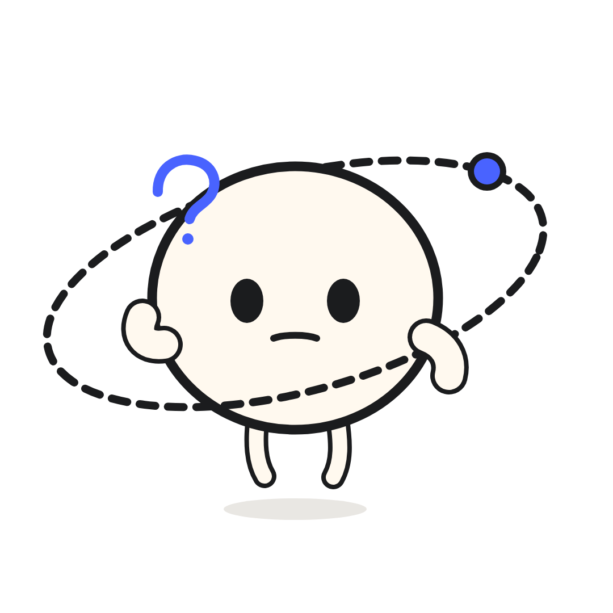
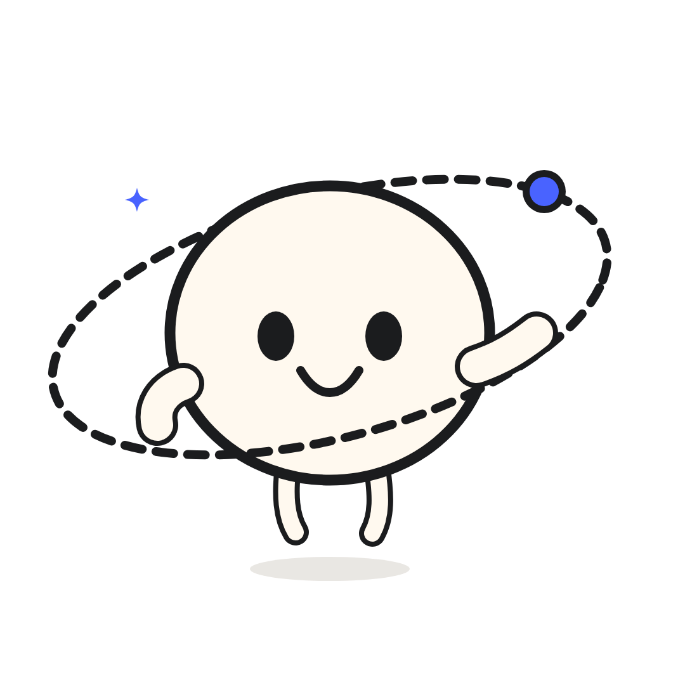

Tu web se ve bien.¿Y después?
El diseño también debe ayudar a tu cliente a dar el siguiente paso.
Del interés a la conversación
Entiende la oferta
→Encuentra evidencia
→Contacta

Desliza →
Una landing
va al grano.
Una oferta, un público y una acción principal.
Un problema.
Una solución.
Solicitar propuesta →
No le escondas
el mapa.
Varios servicios necesitan rutas claras para explorarlos.
Más contexto. No páginas por llenar.
No compiten.
Se conectan.
La web presenta a la empresa. Las landings profundizan en cada oferta.
Web
corporativaVisión completa
→
Landing de servicio A
Landing de servicio B
Landing de campaña

El objetivo no es sumar pantallas. Es facilitar la decisión.
Antes de diseñar,
3 preguntas.
01¿Qué ofreces exactamente?
02¿Quién llega a tu página?
03¿Qué debe hacer después?
Primero el recorrido.
Después el diseño.Profundiza en el artículo de Orbital Insights.